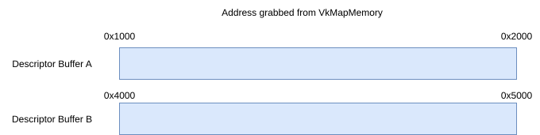
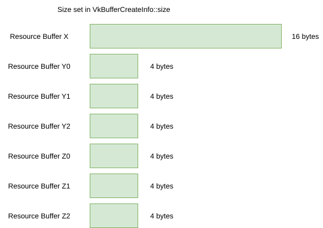
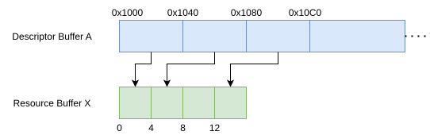
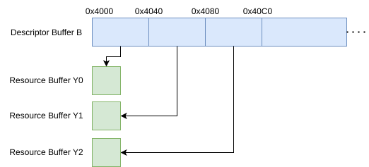
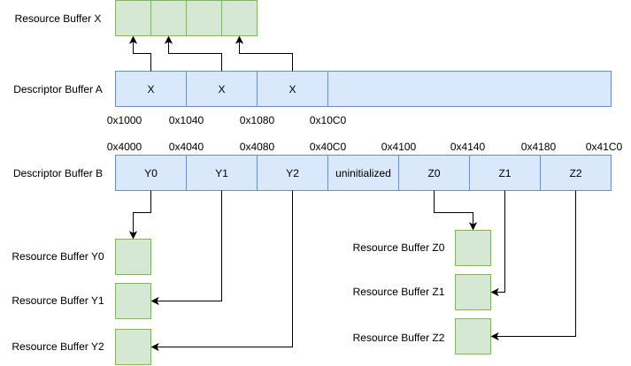
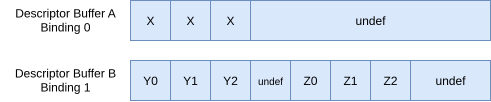
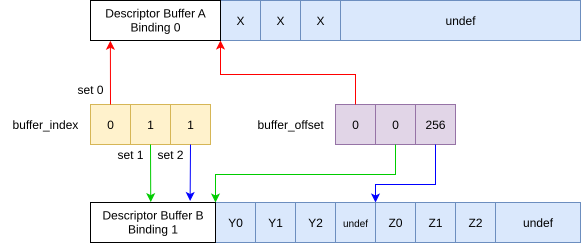
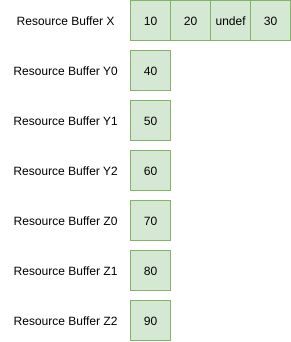
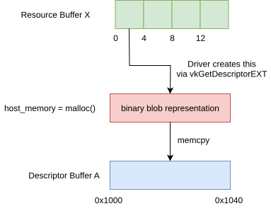
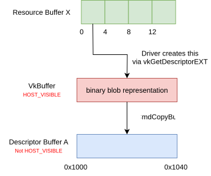

Descriptor Buffer
This chapter aims to illustrate better how VK_EXT_descriptor_buffer mapping of memory works.
The goal here is not to show a real example or recommended usage, but instead help understand how the API is mapping data to the shader, so that afterwards you can use this API in any way you want.
|
This will only use Storage Buffers because it’s simpler to demonstrate the mappings. Samplers and images work in the same general way, but with caveats better explained in the extension proposal. |
Terminology Overload
To try and clear some terms up first:
-
"descriptor buffers" are just
VkBuffercreated with theVK_BUFFER_USAGE_RESOURCE_DESCRIPTOR_BUFFER_BIT_EXTflags -
"samplers" are
VkSampler(VK_DESCRIPTOR_TYPE_SAMPLER) -
"resources" are all other VkDescriptorType
-
This could be a
VkBuffer, which can be called a "resource buffer"
-
The Example Shader
We will take a basic shader that has 3 sets, each with 3 descriptors inside of them. Each descriptor gets written a unique value.
layout (set = 0, binding = 0) buffer A { uint a; };
layout (set = 0, binding = 1) buffer B { uint b; };
layout (set = 0, binding = 2) buffer C { uint c; };
layout (set = 1, binding = 0) buffer D { uint d; };
layout (set = 1, binding = 1) buffer E { uint e; };
layout (set = 1, binding = 2) buffer F { uint f; };
layout (set = 2, binding = 0) buffer G { uint g; } array[3];
void main() {
a = 10;
b = 20;
c = 30;
d = 40;
e = 50;
f = 60;
array[0].g = 70;
array[1].g = 80;
array[2].g = 90;
}With this shader, we will then have 3 VkDescriptorSetLayout in a single pipeline that exactly matches the shader interface.
// Set 0 and 1
VkDescriptorSetLayoutBinding bindings_a[3] {
{ binding = 0, descriptorType = VK_DESCRIPTOR_TYPE_STORAGE_BUFFER, descriptorCount = 1 },
{ binding = 1, descriptorType = VK_DESCRIPTOR_TYPE_STORAGE_BUFFER, descriptorCount = 1 },
{ binding = 2, descriptorType = VK_DESCRIPTOR_TYPE_STORAGE_BUFFER, descriptorCount = 1 }
}
// Set 2
VkDescriptorSetLayoutBinding bindings_b[1] {
{ binding = 0, descriptorType = VK_DESCRIPTOR_TYPE_STORAGE_BUFFER, descriptorCount = 3 }
}
VkDescriptorSetLayout ds_layout_0(bindings_a); // Set 0
VkDescriptorSetLayout ds_layout_1(bindings_a); // Set 1
VkDescriptorSetLayout ds_layout_2(bindings_b); // Set 2
VkPipelineLayout pipeline_layout([ds_layout_0, ds_layout_1, ds_layout_2]);Query Descriptor Set Layout Sizes
Now using the vkGetDescriptorSetLayoutSizeEXT and vkGetDescriptorSetLayoutBindingOffsetEXT commands, we can get info from the driver what size it needs to properly use these VkDescriptorSetLayout.
|
Don’t make the assumption that |
// This could be done in an array where the set/binding are indexes used to get the size/offsets
VkDeviceSize set_0_size, set_1_size, set_2_size;
vkGetDescriptorSetLayoutSizeEXT(device, ds_layout_0, &set_0_size);
vkGetDescriptorSetLayoutSizeEXT(device, ds_layout_1, &set_1_size);
vkGetDescriptorSetLayoutSizeEXT(device, ds_layout_2, &set_2_size);
VkDeviceSize binding_0_offset, binding_1_offset, binding_2_offset;
vkGetDescriptorSetLayoutBindingOffsetEXT(device, ds_layout_0, 0, &binding_0_offset);
vkGetDescriptorSetLayoutBindingOffsetEXT(device, ds_layout_0, 1, &binding_1_offset);
vkGetDescriptorSetLayoutBindingOffsetEXT(device, ds_layout_0, 2, &binding_2_offset);
// ...|
While it seems we could just go |
Creating Descriptor Buffers
We will create a "special" VkBuffer with VK_BUFFER_USAGE_RESOURCE_DESCRIPTOR_BUFFER_BIT_EXT that now makes it a "descriptor buffer" VkBuffer.
These buffers can be large and they hold a "look up table" to your resources and samplers.
|
The minimum required limit for |
For this demo, we will create two of them.

Creating Resources
For this demo, we will create a couple of "normal" VkBuffer that we will use as our resources. These are small since all the descriptors in our shader as declared as uint.

Mapping Resources to the Descriptor Buffer
Using vkGetDescriptorEXT we find a spot in the "descriptor buffer" and map it you our resources.
|
You can actually use any host memory for this, but for simplicity, we will map it directly to the descriptor buffer for now. |
The following code will map the 3 of the descriptors using a single resource buffer.
// vkMapMemory()
uint8_t* descriptor_ptr = descriptor_buffer_a.GetMappedMemory();
// 64 in this example
size_t descriptor_size = VkPhysicalDeviceDescriptorBufferPropertiesEXT::storageBufferDescriptorSize;
VkDeviceAddress buffer_x_address = vkGetBufferDeviceAddress(buffer_x);
// Example results from vkGetDescriptorSetLayoutBindingOffsetEXT
VkDeviceSize binding_0_offset = 0;
VkDeviceSize binding_1_offset = 64;
VkDeviceSize binding_2_offset = 128;
VkDescriptorGetInfoEXT get_info;
get_info.type = VK_DESCRIPTOR_TYPE_STORAGE_BUFFER;
get_info.data.pStorageBuffer->range = 4;
get_info.data.pStorageBuffer->address = buffer_x_address;
vkGetDescriptorEXT(get_info, descriptor_size, descriptor_ptr + binding_0_offset);
get_info.data.pStorageBuffer->address = buffer_x_address + 4;
vkGetDescriptorEXT(get_info, descriptor_size, descriptor_ptr + binding_1_offset);
get_info.data.pStorageBuffer->address = buffer_x_address + 12;
vkGetDescriptorEXT(get_info, descriptor_size, descriptor_ptr + binding_2_offset);
We can also have each descriptor map to its own resource buffer.
// Switching descriptor buffers
descriptor_ptr = descriptor_buffer_b.GetMappedMemory();
get_info.data.pStorageBuffer->address = buffer_y1_address;
vkGetDescriptorEXT(get_info, descriptor_size, descriptor_ptr + binding_0_offset);
get_info.data.pStorageBuffer->address = buffer_y2_address;
vkGetDescriptorEXT(get_info, descriptor_size, descriptor_ptr + binding_1_offset);
get_info.data.pStorageBuffer->address = buffer_y3_address;
vkGetDescriptorEXT(get_info, descriptor_size, descriptor_ptr + binding_2_offset);
And finally we can bind our last set.
size_t set_offset = 256;
assert(set_offset > set_1_size);
assert(set_offset.IsAligned(VkPhysicalDeviceDescriptorBufferPropertiesEXT::descriptorBufferOffsetAlignment));
get_info.data.pStorageBuffer->address = buffer_z0_address;
vkGetDescriptorEXT(get_info, descriptor_size, descriptor_ptr + set_offset + binding_0_offset);
get_info.data.pStorageBuffer->address = buffer_z1_address;
vkGetDescriptorEXT(get_info, descriptor_size, descriptor_ptr + set_offset + binding_1_offset);
get_info.data.pStorageBuffer->address = buffer_z2_address;
vkGetDescriptorEXT(get_info, descriptor_size, descriptor_ptr + set_offset + binding_2_offset);
Binding Descriptor Buffers to the Command Buffer
With vkCmdBindDescriptorBuffersEXT we will now bind the "descriptor buffer" to the command buffer.
|
While you can create multiple descriptor buffers, there is a stricter limit how many are bound.
The validation layers will warn you if you go over limits such as |
VkDescriptorBufferBindingInfoEXT binding_info[2];
binding_info[0].address = descriptor_buffer_a.Address();
binding_info[0].usage = VK_BUFFER_USAGE_RESOURCE_DESCRIPTOR_BUFFER_BIT_EXT;
binding_info[1].address = descriptor_buffer_b.Address();
binding_info[1].usage = VK_BUFFER_USAGE_RESOURCE_DESCRIPTOR_BUFFER_BIT_EXT;
vkCmdBindDescriptorBuffersEXT(commandbuffer, 2, binding_info);
Binding Offsets
Next we will call vkCmdSetDescriptorBufferOffsetsEXT and line up the VkDescriptorSetLayout (from the VkPipelineLayout) to our descriptor buffer.
|
Most commands recorded in a command buffer can be in any order as long as it’s in/out of a render pass, and before a draw.
|
size_t set_offset = 256; // from above
uint32_t first_set = 0;
uint32_t set_count = 3;
uint32_t buffer_index[3] = {0, 1, 1};
VkDeviceSize buffer_offset[3] = {0, 0, set_offset};
vkCmdSetDescriptorBufferOffsetsEXT(commandbuffer, pipeline_bind_point, pipeline_layout, first_set, set_count, buffer_index, buffer_offset);
Draw away
That is it, from here you can just call vkCmdDraw (or other action commands such as vkCmdDispatch) and everything should be working!

Descriptor is actually just memory
When you call vkGetDescriptorEXT what is really happening? The driver is actually just taking the VkDescriptorGetInfoEXT information and turning it into a binary blob, which even the application can read now!
// Can be used to print on your machine as well
void print_bytes(const void* memory, size_t size) {
const uint8_t* bytes = (uint8_t*)memory;
printf("--- (at %p) ---\n", memory);
for (size_t i = 0; i < size; ++i) {
printf("%02X ", bytes[i]);
if ((i + 1) % 16 == 0) {
printf("\n");
}
}
printf("\n");
}
void* some_host_memory = buffer.GetMappedMemory();
vkGetDescriptorEXT(device, get_info, descriptor_size, some_host_memory);
print_bytes(some_host_memory, descriptor_size);
// printf output running on Lavapipe
// This represents what a "descriptor" is as a binary blob
--- (at 0x71841c1e7240) ---
00 80 1E 1C 84 71 00 00 10 00 00 00 00 00 00 00
00 00 00 00 00 00 00 00 00 00 00 00 00 00 00 00
00 00 00 00 00 00 00 00 00 00 00 00 00 00 00 00
00 00 00 00 00 00 00 00 00 00 00 00 00 00 00 00Copying the descriptor yourself
So with this knowledge, we should now realize we can actually just memcpy the descriptor ourselves.
void* host_memory = malloc(descriptor_size);
VkDescriptorGetInfoEXT get_info;
get_info.type = VK_DESCRIPTOR_TYPE_STORAGE_BUFFER;
get_info.data.pStorageBuffer->range = 4;
get_info.data.pStorageBuffer->address = buffer_x_address;
vkGetDescriptorEXT(get_info, descriptor_size, host_memory);
void* descriptor_ptr = descriptor_buffer_a.GetMappedMemory();
memcpy(descriptor_ptr, host_memory, descriptor_size)
Copying the descriptor on the GPU
So we can go another step and make our descriptor buffer not even host visible.
We can write the descriptor into a "staging" VkBuffer and then copy it on the GPU.
void* staging_buffer_ptr = staging_buffer.GetMappedMemory();
vkGetDescriptorEXT(get_info, descriptor_size, staging_buffer_ptr);
vkCmdCopyBuffer(srcBuffer = staging_buffer, dstBuffer = descriptor_buffer_a);